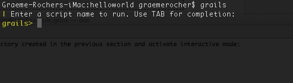
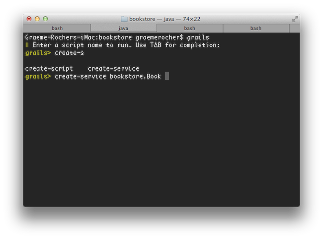

export JAVA_HOME=/Library/Java/Home
export PATH="$PATH:$JAVA_HOME/bin"2 入门
Version: 4.0.0
Table of Contents
2 入门
2.1 安装要求
在安装 Grails 4.0.0 之前，您至少需要安装一个 1.8 或以上版本的 Java 开发工具包(JDK)。下载适合您的操作系统的 JDK，运行安装程序，然后设置一个名为 JAVA_HOME 的环境变量，指向安装的位置。
为了自动化 Grails 的安装，我们推荐 SDKMAN 大大简化了安装和管理多个 Grails 版本。
在某些平台上(例如OS X)，会自动检测到 Java 安装。但是，在许多情况下，您需要手动配置 Java 的位置。例如，如果您正在使用 bash 或 Bourne Shell 的另一种变体:
在Windows上，你必须在 My Computer/Advanced/Environment Variables 中配置这些环境变量
|
2.2 下载和安装
启动和运行 Grails 的第一步是安装这个发行版。
在 *nix 系统上安装 Grails 的最佳方法是使用 SDKMAN ，SDKMAN 大大简化了安装和管理多个 Grails 版本。
安装 SDKMAN
要使用 SDKMAN 安装最新版本的 Grails，请在您的终端上运行它：
sdk install grails您还可以指定一个版本
sdk install grails 4.0.0您可以在 SDKMAN Docs 中找到关于 SDKMAN 使用的更多信息。
手动安装
手动安装请遵循以下步骤:
-
Download Grails 的二进制发行版，并将生成的 zip 文件解压缩到您选择的位置
-
将 GRAILS_HOME 环境变量设置为您提取 zip 的位置
-
在基于 Unix/Linux 的系统中，这通常是在您的配置文件中添加类似
export GRAILS_HOME=/path/to/grails这样的内容 -
在Windows中，这通常是在
My Computer/Advanced/Environment Variables下设置一个环境变量
-
-
然后将
bin目录添加到您的PATH变量中:-
在基于Unix/Linux的系统中，这可以通过在您的配置文件中添加
export PATH="$PATH:$GRAILS_HOME/bin"来实现 -
在Windows中，这是通过修改
My Computer/Advanced/Environment Variables下的Path环境变量来实现的。
-
如果 Grails 工作正常，您现在应该可以在终端窗口中输入 grails -version ，并看到类似如下的输出:
Grails version: 4.0.02.3 创建应用程序
要创建 Grails 应用程序，首先需要熟悉 Grails 命令的用法，它的用法如下:
grails <<command name>>运行 create-app 创建应用:
grails create-app helloworld这将在包含项目的当前目录中创建一个新目录。在你的控制台中导航到这个目录:
cd helloworld2.4 Hello World 示例
现在让我们将这个新项目转换为经典的 “Hello world!” 示例。
首先，切换到刚刚创建的 “helloworld” 目录，启动 Grails 交互控制台:
$ cd helloworld
$ grails你会看到这样的提示:

我们需要的是一个简单的页面，它只向浏览器输出 “Hello World!”。
在 Grails 中，每当需要一个新页面时，只需为它创建一个新的 controller。由于我们还没有一个 controller，让我们现在创建一个控制器。
grails> create-controller hello不要忘记，在交互控制台中，我们有命令名的自动补全功能。
因此，您可以键入“cre”，然后按 <tab> 得到所有 create-* 命令的列表。
再输入几个命令名字母，然后再次 <tab> 来完成。
上面的命令将创建一个新 controller 在 grails-app/controllers/helloworld 目录下，名为 HelloController.groovy 。
为什么多了一个额外的 helloworld 目录？因为在 Java 领域，强烈建议将所有类都放到包中，所以如果不提供应用程序名称，Grails 将默认使用应用程序名称。create-controller 提供了更多的细节。
现在我们有了一个控制器，让我们添加一个动作来生成 “Hello World!” 页面。
在任何文本编辑器中，编辑新控制器 — HelloController.groovy 文件 — 通过添加一个 render line。
文件里的代码应该是这样的:
package helloworld
class HelloController {
def index() {
render "Hello World!"
}
}这个控制器只有一个简单的方法。在这个特殊的例子中，它调用了Grails提供的一个特殊方法来 render。
任务完成。想要看你的应用运行，你只需要启动一个服务器与另一个命令 run-app:
grails> run-app这将在承载应用程序的端口8080上启动一个嵌入式服务器。现在，访问您的应用程序—请尝试一下! 您应该能够通过 URL http://localhost:8080/
要为应用程序设置上下文路径，可以在 grails-app/conf/application.yml 中添加一个配置属性:
server:
servlet:
context-path: /helloworld有了上面的配置，服务器将在URL http://localhost:8080/helloworld/ 处启动。
或者，你也可以通过命令行设置上下文路径:
grails> run-app -Dgrails.server.servlet.context-path=/helloworld
如果您看到错误" Server failed to start for port 8080: Address already in use"，那么这意味着另一个服务器正在该端口上运行。
您可以通过使用 run-app -port=9090 在不同的端口上运行服务器来轻松解决这个问题。
'9090’就是一个例子：你几乎可以选择 1024 到 49151 之间的任何东西。
|
结果将是这样的:

这是由 grails-app/view/index.gsp 渲染的 Grails 项目首页。
它检测你的控制器的存在并提供链接。
您可以点击 "HelloController" 链接，查看包含文本"Hello World!"的自定义页面。
瞧!您有了第一个可以工作的Grails应用程序。
最后一件事:控制器可以包含许多操作，每个操作对应于不同的页面(此处忽略AJAX)。 每个页面都可以通过一个由控制器名和操作名组成的惟一URL进行访问 :/<appname>/<controller>/<action> 。 这意味着您可以通过 /helloworld/hello/index 访问Hello World页面，其中 'Hello' 是控制器名称(从类名中去掉 'Controller' 后缀，第一个字母用小写字母表示)，'index' 是操作名称。 但是，您也可以通过相同的 URL 访问页面，而不需要 action 名称:这是因为’index’是 default action 。 用户指南的 controllers and actions 部分，以了解更多的默认动作。
2.5 使用交互模式
从 3.0 开始，Grails 就有了交互式模式，这使得命令执行更快，因为不必为每个命令重新启动 JVM。要使用交互模式，只需从任何项目的根目录中输入 'grail' ，并使用TAB补全来获得可用命令的列表。请看下面的截图：

有关交互模式功能的更多信息，请在用户指南中参阅 Interactive Mode 。
2.6 在 IDE 中设置
IntelliJ IDEA
IntelliJ IDEA 是 Grails 3.0 开发的优秀 IDE。它有两个版本，免费社区版和付费终极版。
虽然 GSP 高亮语法只存在于付费版中，但社区版可以用于大多数情况
| 如果您想在社区版中高亮显示 GSP，那么可以在 HTML 编辑器中打开 GSP 文件。 |
要开始使用 Intellij IDEA 和 Grails 3.0，只需点击 File / Open ，将 IDEA 指向你用于导入和配置项目的 build.gradle 文件。
TextMate, Sublime, VIM 等.
有几个优秀的文本编辑器可以很好地与Groovy和Grails配合使用。参考文献如下:
-
TextMate bundle 存在 Groovy / Grails 支持在 Textmate
-
Sublime Text plugin 可以通过Sublime包控件安装 Sublime Text Editor。
-
参见 this post 了解一些关于如何设置VIM作为Grails编辑器的有用技巧。
-
Atom Package 和 Atom editor一起用。
2.7 配置的约定
Grails 使用“约定优于配置”来配置自己。这通常意味着使用的是文件的名称和位置，而不是显式的配置，因此您需要熟悉 Grails 提供的目录结构。
以下是各有关部分的分类及连结:
-
grails-app- Groovy 源代码的顶级目录-
conf- Configuration sources -
controllers- Web controllers - MVC 的 C。 -
domain- 域类 application domain. -
i18n- 国际化支持 internationalization (i18n). -
services- The service layer. -
taglib- Tag libraries. -
utils- Grails 工具. -
views- Groovy Server Pages or JSON Views - MVC 的 V.
-
-
src/main/scripts- Code generation scripts. -
src/main/groovy- 其他 groovy 源码 -
src/test/groovy- Unit and integration tests.
2.8 运行和调试应用程序
Grails 应用程序可以使用 Tomcat 服务器中内置的链接来 run-app，默认情况下在端口 8080 加载服务器：
grails run-app你可以指定一个不同的端口使用 -port 参数:
grails run-app -port=8090请注意，最好以交互模式启动应用程序，因为容器重新启动要快得多：
$ grails
grails> run-app
| Grails application running at http://localhost:8080 in environment: development
grails> stop-app
| Shutting down application...
| Application shutdown.
grails> run-app
| Grails application running at http://localhost:8080 in environment: development只需右键单击 Application.groovy，在 IDE 中分类并选择适当的操作(Grails 3 以上)。
或者，您可以使用以下命令运行应用程序，然后将远程调试器附加到应用程序上。
grails run-app --debug-jvm更多信息可在 run-app 命令可以在参考指南中找到。
2.9 测试应用程序
Grails 中的 create-* 命令会在 src/test/groovy 目录中自动为您创建单元测试或集成测试。当然，您可以使用有效的测试逻辑来填充这些测试，有关这些逻辑的信息可以在 Unit and integration tests 中找到。
要执行测试，您可以运行以下 test-app 命令：
grails test-app2.10 部署应用程序
Grails 应用程序可以以多种不同的方式部署。
如果部署到传统容器(Tomcat、Jetty等)，可以创建 Web 应用程序存档(WAR文件)，Grails 包含 war。执行此任务的命令:
grails war这将在 build/libs 目录下生成一个WAR文件，然后可以根据容器的说明部署该文件。
注意，在默认情况下，Grails 将在 WAR 文件中包含一个可嵌入的 Tomcat 版本，如果将其部署到另一个 Tomcat 版本，则可能会导致问题。如果您不打算使用嵌入式容器，那么您应该在 build.gradle 中将Tomcat依赖项的范围更改为 provided ，然后再部署到您的生产容器中:
provided "org.springframework.boot:spring-boot-starter-tomcat"如果您正在构建一个要在 Tomcat 7 上部署的 WAR 文件，那么您还需要在构建中更改目标 Tomcat 版本。默认情况下，Grails是针对 Tomcat 8 的 API 构建的。
要针对 Tomcat 7 容器，在 dependencies { } 上面插入一行 build.gradle :
ext['tomcat.version'] = '7.0.59'不像大多数脚本默认为 development 环境，除非被覆盖， war 命令默认在 production 环境中运行。您可以通过指定环境名称来像任何脚本一样覆盖它，例如：
grails dev war如果您不希望操作单独的 Servlet 容器，那么可以简单地将 Grails WAR 文件作为标准 Java 应用程序运行。例如：
grails war
java -Dgrails.env=prod -jar build/libs/mywar-0.1.war在部署 Grails 时，应该始终使用 -server 选项和足够的内存分配来运行容器 JVM 。一组好的 VM 标志是：
-server -Xmx768M -XX:MaxPermSize=256m2.11 支持的 Java EE 容器
Grails 可以在任何支持 Servlet 3.0 及以上的容器上运行，并且已知可以在以下特定容器产品上工作：
-
Tomcat 7
-
GlassFish 3 or above
-
Resin 4 or above
-
JBoss 6 or above
-
Jetty 8 or above
-
Oracle Weblogic 12c or above
-
IBM WebSphere 8.0 or above
| 需要在 "Application servers > server > Process Definition > Java Virtual Machine > Generic JVM arguments" 中为较老版本的 WebSphere 设置 "-Xverify:none" 。对于 WebSphere version 8 或更新版本，不再需要这样做。 |
但是，有些容器有 bug，在大多数情况下可以解决这些 bug。 一个 list of known deployment issues 可以在 Grails wiki 上找到。
另外, 参考 Grails Guides 关于如何将 Grails 部署到各种流行的云服务的提示
2.12 创建人工制品
Grails 附带了一些方便的命令，比如 create-controller , create-domain-class 等将创建 controllers 为您创建不同的内容。
| 这些只是为了您的方便，您可以轻松地使用 IDE 或您最喜欢的文本编辑器。 |
例如，要创建应用程序的基础，您通常需要一个 domain model：
grails create-app helloworld
cd helloworld
grails create-domain-class book这将导致在 grails-app/domain/helloworld/Book.groovy 创建一个域类，如：
package helloworld
class Book {
}有许多这样的 create-* 命令可以在命令行参考指南中找到。
| 为了减少运行 Grails 脚本所需的时间，可以使用交互式模式。 |
2.13 生成应用程序
要快速开始使用 Grails，通常需要使用一个名为 scaffolding 的特性，生成应用程序的框架。要做到这一点，可以使用 generate-* 命令，比如 generate-all ，它将生成一个 controller (包含他的测试用例)和相关 views :
grails generate-all helloworld.Book